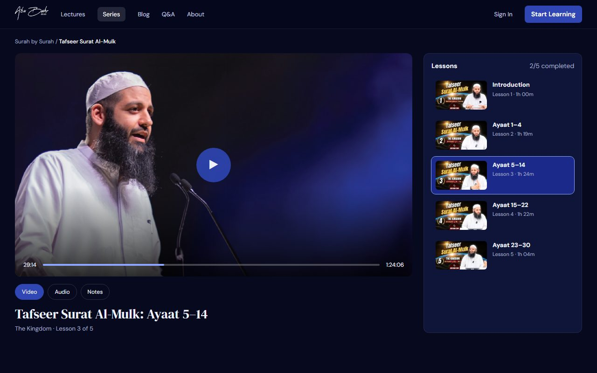
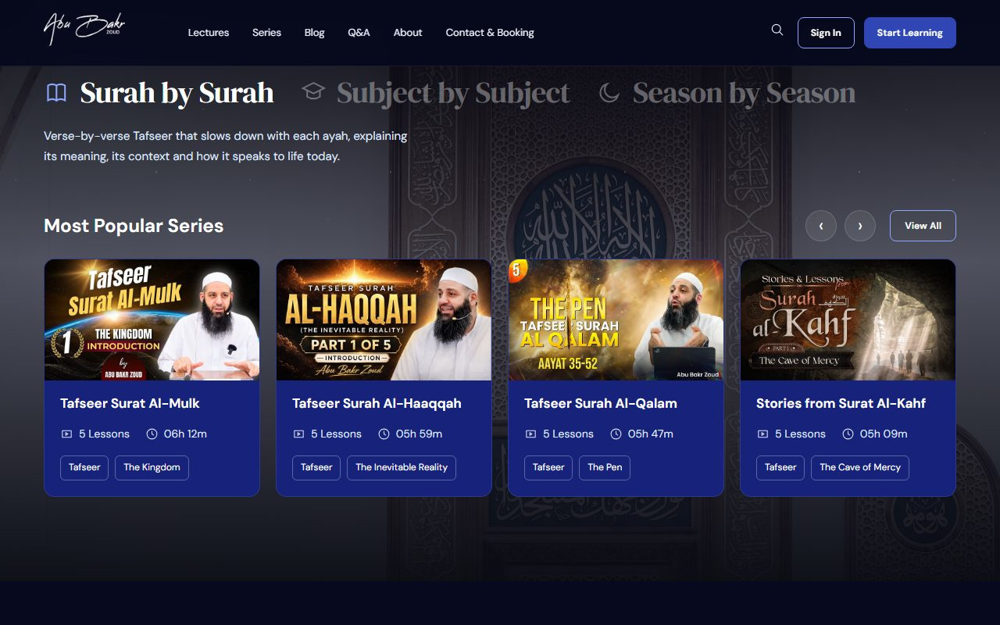
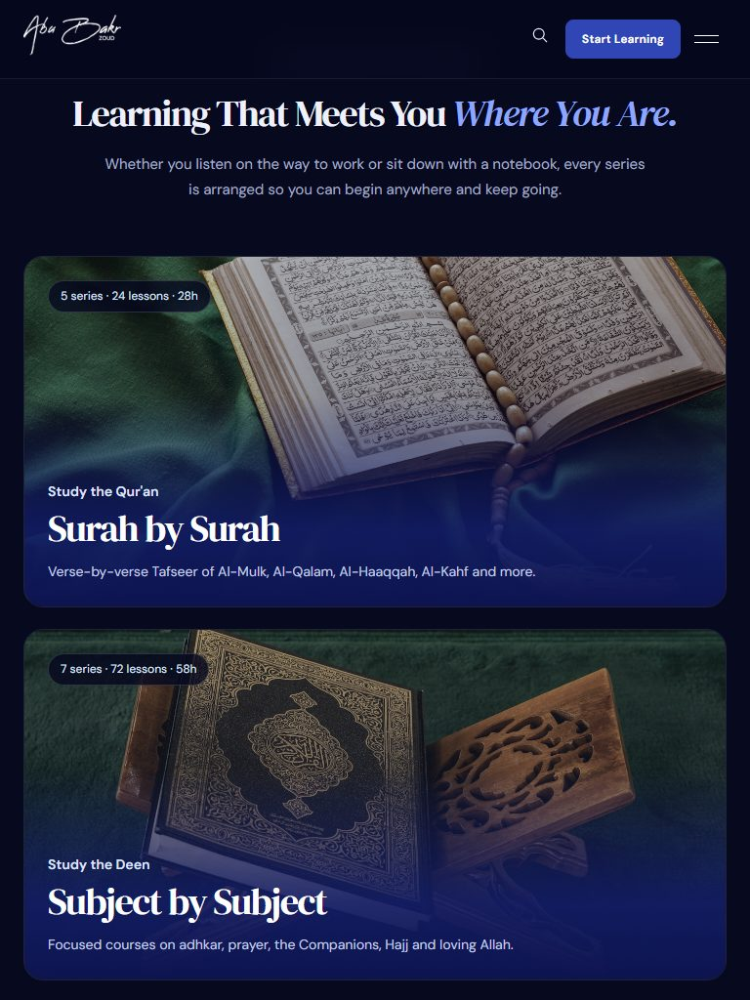
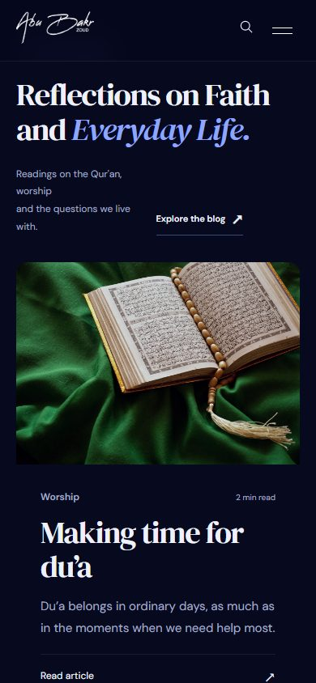
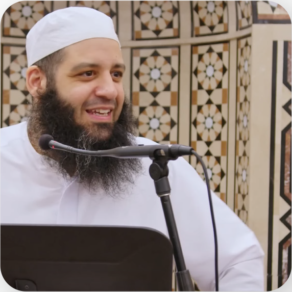

Clear. Structured. Accessible.
Follow each series from the first lesson to the last, with lesson counts and running times so you know what you are starting.

Deepen your connection with Allah through clear, structured study of His words: surah by surah, subject by subject.




Graduate of the Islamic University of Madinah
The Tafseer of Surah Al-Mulk changed how I read it every night. Each lesson is clear, calm and easy to come back to.
The SHIELD series gave me a daily routine of adhkar that I have kept up for months. Practical and full of meaning.
I listen on the drive to work. The reminders are short enough for a busy day, but they stay with me long after.
Our community invited the Shaykh for a weekend program. People are still talking about it and asking when he will be back.
Whether you listen on the way to work or sit down with a notebook, every series is arranged so you can begin anywhere and keep going.
Verse-by-verse Tafseer of Al-Mulk, Al-Qalam, Al-Haaqqah, Al-Kahf and more.
Focused courses on adhkar, prayer, the Companions, Hajj and loving Allah.
Lectures and daily reminders for Ramadan, Dhul Hijjah and the best days.
Follow each series from the first lesson to the last, with lesson counts and running times so you know what you are starting.
Lessons grounded in study at the Islamic University of Madinah, from a teacher of Tafseer at the Islamic College of Australia.
Watch on YouTube or take the audio with you on your favourite podcast app, at home, on the road or between prayers.
Readings on the Qur'an, worship
and the questions we live with.
Du’a belongs in ordinary days, as much as in the moments when we need help most.
Read articleHow to make room for remembrance without waiting for life to slow down.
Read articleA reflection on the reassurance in Surah Ash-Sharh, and taking the next small step.
Read articleGratitude begins with paying attention to the blessings we have become used to.
Read articleA little preparation can help us return to reading with more attention and consistency.
Read articleThe everyday opportunities to practise care, patience and responsibility towards others.
Read articleTafseer, short reminders and
guidance for everyday questions.
No reminders in this selection. Try another topic.
More from the lecture library
Connecting the timeless guidance of Islam with the questions we carry today.
Shaykh Abu Bakr Zoud is a graduate of the Islamic University of Madinah, specialising in Qur'aat. He teaches Tafseer at the Islamic College of Australia.
His lectures invite listeners to reflect on the Qur'an, understand the Sunnah and bring that knowledge into everyday life.
Take a reminder into your day with audio lectures, Tafseer and short reflections.
Find new reminders, keep up with the Shaykh's
work and stay connected to beneficial knowledge.
Explore the Shaykh's community visits and appearances.
Tours & appearancesBrowse answered questions, or send your own question for the Shaykh.
Explore questions & answers